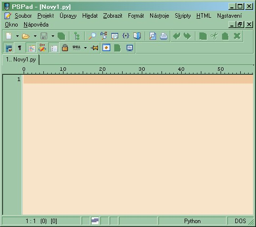

PSPad


Jak nastavit PSPad, aby práce při programování v Pythonu byla příjemná a efektivní? Máme pro vás pát tipů, pokud znáte další, neváhejte je doplnit. Po bezproblémové instalaci z http://www.pspad.com doporučujeme následující:
Nastavení - Nastavení zvýrazňovačů
- Zrušit zaškrtnutí všech a vybrat jen ty, které budete používat, včetně Pythona
- V záložce Barvy načíst příjemnější Barevné schéma než to defaultní
- V záložce Upřesnění (při vybraném zvýrazňovači Python)
- nastavit Znak pro rozšířené odsazování na : a Šířku tabu na 4
- Soubor s nápovědou - najít svůj Python25\Doc\Python25.chm (bude vám pak fungovat příjemné Alt+F1 na vyvolání pyHelpu)
- V záložce Externí programy přidat svůj python.exe (pak bude fungovat na spuštění vašeho programu klávesa F9): například "C:\Python25\python.exe" -i "%File%" (to -i je tam proto, aby se černé shellovské okno hned nezavřelo).
- Chcete-li scriptu předávat další parametry, po spuštění pomocí F9 , použijte %input%. Řádka pak bude vypadat asi takto "C:\Python25\python.exe" -i "%File%" %input%
Nastavení - Nastavení programu
Doporučujeme projít a nastavit si velké množství voleb, jak potřebujete. Např.
- při spuštění si nepamatovat naposledy otevřené dokumenty a nastavovat jako defaultní *.py
- pamatovat si poslední navštívený adresář
- nepoužívat skutečné tabulátory (místo skutečného tabulátoru vloží editor patřičný počet mezer) Průzkumník kódu
Průzkumník kodu
Máte ve svém programu více jak jednu funkci nebo třídu? Pak se vám jistě šikne Průzkumník kódu (tzv. Class browser). Zapíná se: Nástroje - Průzkumník kódu. Je to dost návyková věc, pro rychlý přehled a přesun. Pokud si na ní zvyknete, nenajdete cestu zpět. Podivuhodně dobře funguje i na php, html, javascript, pascal, c, ....
Automatické vkládání příkazů
V PSPadu se tomu říká Šablony a funguje to následovně: Např. chcete napsat příkaz import.
- tak buď ho napíšete normálně, což je 7 kláves včetně mezery za
- nebo stisknete CTRL+mezerník, pak I (jako první písmeno z import), pak M (jako druhé písmeno z import) a pak Enter. Jestli dobře počítám je to 5 kláves. Dvě jsme ušetřili ;-) Ten seznam, který dostanete po CTRL-mezerník, může sloužit i jako malá nápověda.
Automatické dokončování (Code completition)
Dejme tomu, že máte napsáno:
import time, tkMessageBox, random from Tkinter import *
Napíšete-li nyní kdekoliv písmeno 't', pak CTRL+J, tak vám vyskočí nabídka se třemi možnými slovy - time, tkMessageBox a Tkinter. No a vy jedno vyberete a potvrdíte Enterem. Pokud napíšete 'tkm', a stisknete CTRL+J, tak se okamžitě doplní tkMessageBox.
Práce s kodováním
Otevře-te li si jakýkoliv soubor, a máte-li zapnuto Automatickou detekci CP (CP jako Code Page - Kódová stránka), tak vpravo dole ve stavovém řádku uvidíte aktuálně použité kodování v souboru. Když říkám aktuálně použité myslím tím spíše automatickou detekci PSPadu, jaké kodování to nejpravděpodobněji bude. Kodování souboru se nedá, až např. na utf-8, nikdy určit spolehlivě pomocí programové detekce (nyní mluvím hlavně o našich cp1250, cp852, a iso-8859-2). Pokud chcete kodování změnit na jiné, použijte volby v menu Formát. Pokud chcete otevřít program v jiném kódování, vypněte Automatickou detekci CP.